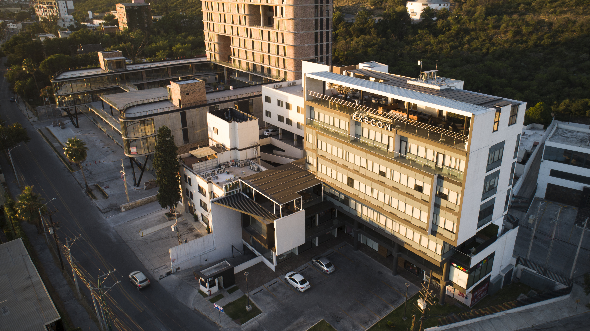
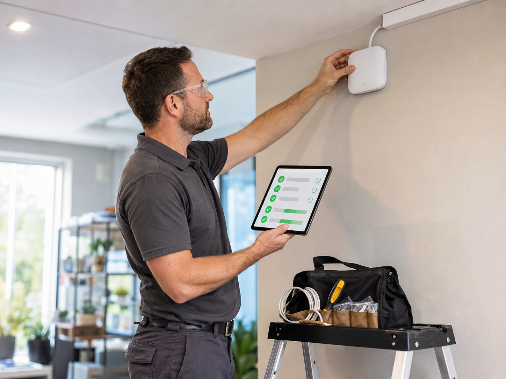

La tecnología puede ser la misma. La diferencia está en cómo la ponemos al servicio de tu operación.
Durante más de dos décadas hemos aprendido que una buena solución no depende únicamente de la tecnología. Depende de entender la operación, diseñar de acuerdo con sus necesidades, ejecutar con consistencia y acompañar al cliente durante todo el ciclo de vida del servicio.
Por eso buscamos convertirnos en una extensión de tu equipo de TI, combinando experiencia, capacidad técnica, procesos y cobertura nacional para ayudarte a mantener y evolucionar tu infraestructura.
Cada solución comienza entendiendo tu operación
Antes de hablar de equipos o plataformas, buscamos comprender cómo funciona tu organización, cuáles son sus prioridades y qué impacto tiene la infraestructura en la continuidad del negocio.
Ese entendimiento nos permite diseñar soluciones alineadas con la realidad de cada cliente y con los resultados que busca alcanzar, no únicamente con las características de una tecnología.
Primero entendemos el reto. Después definimos cómo puede ayudarnos la tecnología a resolverlo.
La tecnología debe adaptarse a la operación, no al revés
Cada proyecto parte de necesidades diferentes. Por eso combinamos tecnologías, servicios y capacidades buscando el equilibrio adecuado entre desempeño, disponibilidad, escalabilidad e inversión.
Nuestros especialistas diseñan soluciones preparadas no solo para responder a las necesidades actuales, sino también para acompañar la evolución de la operación.
No buscamos instalar más tecnología. Buscamos implementar la que tu operación realmente necesita.
Una solución bien diseñada también necesita una ejecución consistente
Ya sea una implementación en una ubicación o un despliegue nacional, trabajamos con procesos, metodologías y equipos especializados para mantener un mismo estándar de ejecución.
Project Managers, coordinadores, logística, especialistas e ingenieros de campo trabajan de manera integrada para planear las actividades, coordinar recursos, documentar avances y mantener visibilidad durante el proyecto.
La escala puede cambiar. Nuestro estándar de ejecución no.

Detrás de cada servicio existe una estructura preparada para actuar
NOC, Mesa de Servicio, plataformas de monitoreo, gestión de proyectos y herramientas de campo trabajan de manera integrada para compartir información, facilitar la coordinación entre equipos y responder oportunamente ante las necesidades de nuestros clientes.
Cuando surge una situación, no solo importa resolverla. También importa dar seguimiento, mantenerte informado y acompañarte hasta confirmar su resolución.
Una buena experiencia para nuestros clientes comienza con una operación bien conectada.
Porque el verdadero valor comienza cuando la solución entra en operación
Nuestro trabajo no termina al concluir un proyecto. Dependiendo del servicio, podemos continuar acompañando la operación mediante monitoreo, Mesa de Servicio, soporte especializado, atención en campo y seguimiento de los servicios implementados.
Buscamos que nuestros clientes cuenten con un equipo que conozca su infraestructura, responda cuando sea necesario y dé continuidad a las necesidades que surgen en el día a día.
Implementar es el comienzo. Mantener la solución generando valor es parte del compromiso.
El acompañamiento también se planea
Las necesidades de una organización cambian con el tiempo. Por eso, con nuestros clientes buscamos mantener una conversación que vaya más allá de la operación cotidiana.
A través de nuestros Customer Success Plans, definimos conjuntamente objetivos y acciones que nos permiten dar seguimiento a la evolución de los servicios, identificar oportunidades de mejora y explorar nuevas capacidades que puedan generar mayor valor para la operación.
Porque una relación de largo plazo no se construye únicamente manteniendo un servicio, sino ayudándolo a evolucionar junto con tu operación.
Entendemos qué busca lograr el cliente y qué resultados espera de sus servicios.
Revisamos avances, resultados y temas relevantes para la evolución de la relación.
Identificamos acciones que permitan fortalecer los servicios y la experiencia.
Exploramos nuevas necesidades, capacidades y proyectos que acompañen los objetivos del negocio.
Más de dos décadas acompañando operaciones distribuidas nos han permitido desarrollar procesos, herramientas y equipos preparados para responder a proyectos de cualquier escala.

Cada empresa enfrenta retos distintos. Conversemos sobre los tuyos y descubre cómo una infraestructura diseñada pensando en la operación puede ayudarte a mantener la continuidad de tu negocio y prepararte para crecer.
Hablemos de tu operación